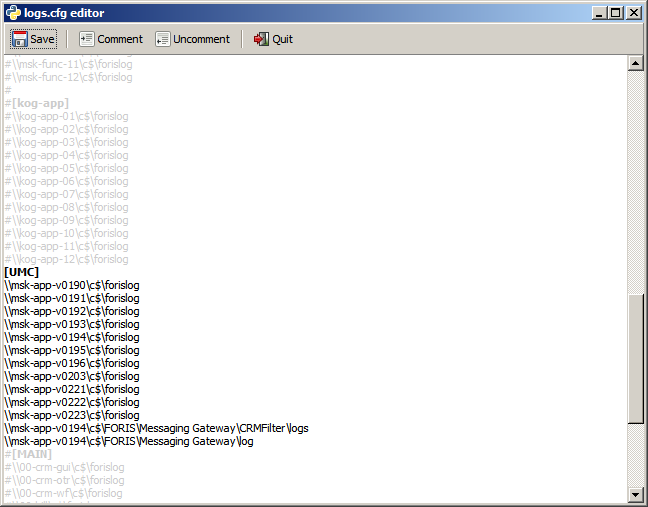
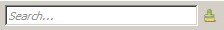

При нажатии на кнопку в панели управления под деревом источников логов, открывается окно редактирования конфигурационного файла, в котором прописаны источники логов:
Кнопки Comment и Uncomment на панели управления позволяют закомментировать и раскомментировать выделенные строки соответственно (источники, соответствующие закомментированным строкам не отображаются в дереве источников после его обновления.)
[Имя_секции1] источник1 источник2 источник3 [Имя_секции2] источник4 источник5 источник6 ...
, где имя_секции - произвольное имя (например имя стенда), которое будет отображаться в "корне" дерева источников логов, источник - путь в файловой системе, где будет осуществелен поиск файлов.
[Имя_секции1] Сервер = лог1, лог2, лог3, лог4 Сервер = лог5, лог6, лог7, лог8 ...
, где имя_секции - произвольное имя (например ися стенда), которое будет отображаться в "корне" дерева источников логов, сервер - имя компьютера, на котором находятся евент-логи, лог - евент-лог.
При вводе строки в поле поиска под деревом источников логов  в дереве остаются только те ветви, "листья" которых соответствуют введенной строке (без учета регистра)
Пример:

Кнопка справа от поля фильтрации дерева очищает это поле.